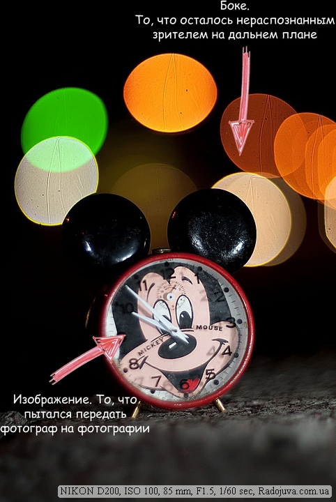
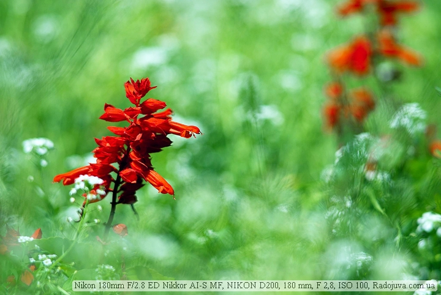
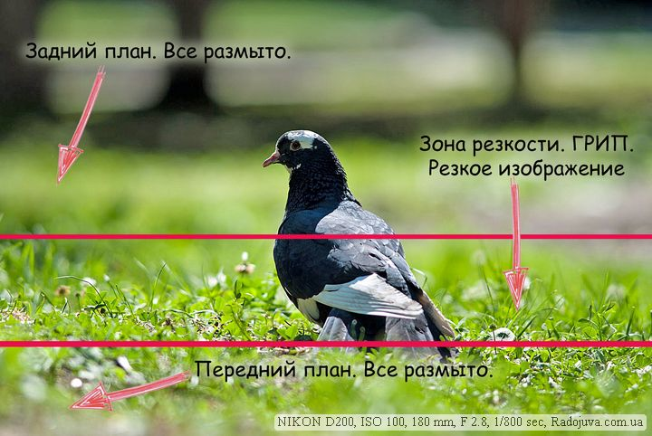
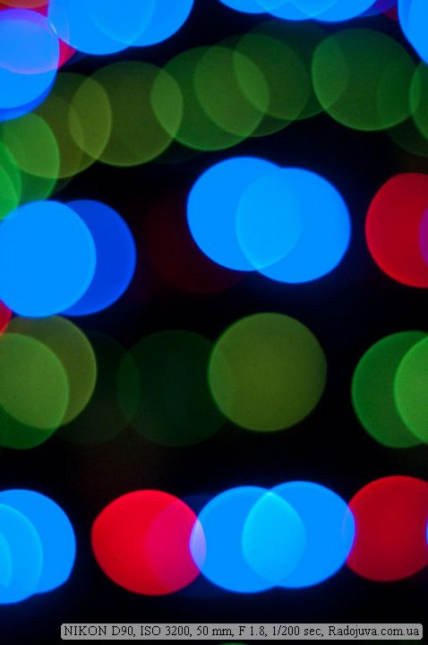
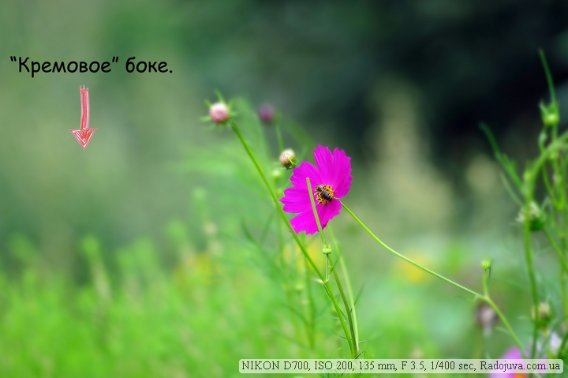
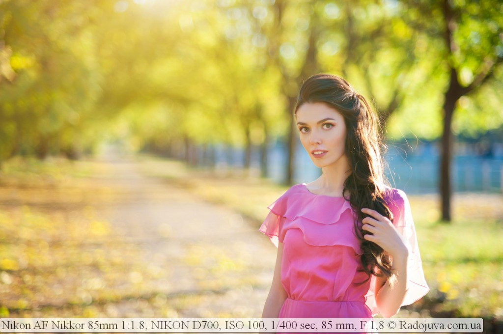

Боке. Мысли про боке.
Боке – это “характер” изображения вне зоны фокусировки, его интенсивность, влияние на общий снимок. Грубо говоря, это то, как размыто изображение вне зоны фокусировки. Термин “размыто” не совсем технический, но как можно больше подходит для описания того, что происходит с изображением не в зоне фокусировки. Изображение “размывается” как будто художник взял и перемешал краски.
При фокусировке камера делает резким только те объекты, на которых сфокусировался объектив. Все остальные объекты в кадре становятся не резкими. При чем, объекты могут быть очень сильно размыты, или размыты всего чуть-чуть. Обычно, на снимке четко видно зону, в которой объекты резкие. Такую зону можно измерить в ширину (глубину).
За ширину этой зоны отвечает ГРИП объектива – Глубина Резко Изображаемого Пространства. Английский аналог DOF. Боке связано напрямую с зоной нерезкости, которая является обратной стороной ГРИП. Потому, влияя на ГРИП, можно объективно повлиять и на боке.
За интенсивность (силу) размытия (боке) отвечают следующие параметры:
- Фокусное расстояние объектива. Чем больше фокусное расстояние объектива – тем проще добиться размытия заднего фона, увеличить степень размытия.
- Светосила объектива. Чем больше относительное отверстие (чем меньше число F), тем проще можно добиться сильного размытия изображения в не зоне резкости и увеличить кружочки нерезкости вне зоны ГРИП.
- Вид отверстия диафрагмы. Обычно, диафрагма при закрытии не может оставаться такой же круглой, как при полностью открытом состоянии. Это связано с ограниченным количеством лепестков диафрагмы. При закрытых диафрагмах вместо дисков (кружочков, кругляшков) в зоне нерезкости появляются многоугольные фигуры.
- Дистанция фокусировки. Чем ближе положения фокусера к МДФ (минимальной дистанции фокусировки), тем сильней будет размытие. Потому, даже на “темный” объектив можно получить хорошее размытие, снимая предметы крупным планом, когда объектив сфокусирован настолько близко, насколько это возможно. Проведите эксперимент, возьмите свой китовый объектив (либо, любой другой), отключите автоматическую фокусировку, установите МДФ и попытайтесь снять какую либо мелочь, например, вазон, чашку чая. Потом посмотрите на зону нерезкости, она будет сильно размыта.
- Оптическая схема объектива, которая, собственно и формирует необычный узор для каждого объектива в отдельности. Лично я считаю хорошей оптической схемой с приятным боке, схему типа Sonnar. Но сейчас просто море других хороших объективов с непонятными многолизновыми схемами и приятным боке. Оптическая схема некоторых объективов, например, таких как Nikon AF DC-Nikkor 105mm 1:2 D Defocus Image Control, имеет специальное кольцо для контроля боке.
- Косвенно влияет размер матрицы. Просто, с одним и тем же объективом для одной и той же композиции (компоновки кадра) с разной величиной матрицы будет разная дистанция фокусировки, потому, и интенсивность размытия выше. Более детально в разделе про Кроп-Фактор.
- Задний и передний план. Очень важно, чтобы было понимание, что рисунок размытия зависит от того, что будет размываться. Яркие одиночные источники света обычно превращаются в светящиеся диски, а однородный фон в мягкую пластичную кашу.
Какие типы боке бывают?
Обычно, в западной литературе выделяют два типа боке: голливудское (Hollywood Style Bokeh) и кремовое боке (Creamcheese Bokeh). Разделения на эти два типа я почти нигде не встречал на просторах СНГ, но, я придерживаюсь такой простой градации.
Голливудское боке (Hollywood Style Bokeh) – боке, в котором ярко выражены светящиеся кружочки (диски) в зоне нерезкости. При чем, это могут быть и не кружочки, а прямоугольники, звездочки, все, что угодно. Почему голливудское? Потому, что в голливудских фильмах очень много снято вечерних и ночных сцен в таком стиле боке. Например, в фильме “Крепкий орешек” на 01:05:00 и во всем фильме диски нерезкости имеют очень сильно вытянутую вертикальную эллипсоидную форму. Вообще, просто сходите в кинотеатр и понаблюдайте за зоной нерезкости, найдете для себя очень много полезных выводов.
Кремовое боке – в отличие от голливудского, призвано делать размытие настоящим “размытым” методом, без ярких разнообразных кругляшков. Пр этом размытие становится по консистенции как крем. Я всегда вспоминаю сладкие эклеры, когда думаю про кремовое боке. Кремового боке достичь достаточно сложно, потому, что все точки в зоне нерезкости пытаются превратиться на снимке в светящиеся диски. Единицы объективов могут производить настоящее кремовое боке. Собственно, пример такого боке ниже.
Боке играет огромную роль в макрофотографии и портретной фотосъемке
Боке для портрета – это целая отдельная наука. В основном, все сводится к тому, чтобы не уделять акцент заднему фону, а выделять лишь только сам портрет человека. Понаблюдайте за художником. Я недавно видел, как рисует художник мой портрет, он на своем холсте рисовал только мое лицо и плечи, совсем не уделяя внимания внешней обстановке. А ведь я сидел на фоне пестрой растительности парка. В итоге на холсте получился только мой плечевой портрет без каких-то лишних деталей. Художник только слегка растушёвывал карандаш на белом листе для придания объема. Собственно, фотографы с помощью “правильного” боке стараются выделить только самого человека, а все лишние “растушевать, превратить в кашу, кисель”. Ниже приведен портрет, на котором боке имеет яркий голливудский стиль, и акцентирует часть внимания зрителя именно на пестром контрастном фоне кругляшков. В то же время, контрастные диски нерезкости добавляют свою изюминку в снимок.
